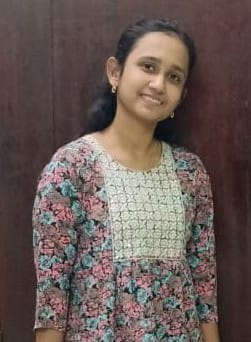

NAMRUTHA SRINIDHI

Aspiring Full-Stack Developer | Computer Science Engineering Student | Vellore
Summary
Enthusiastic and detail-oriented Full-Stack Developer with a strong foundation in front-end and back-end technologies. Currently pursuing a Bachelor’s in Computer Science Engineering (3rd Year), passionate about building scalable web applications and learning emerging technologies. Adept at problem-solving, writing clean code, and collaborating in team environments. Seeking an opportunity to apply my technical skills in real-world projects and contribute to innovative solutions.
Education
- Bachelor of Engineering (B.E), Computer Science Engineering
Annai Mira College of Engineering and Technology, Ranipet
Expected Graduation: 2026
Work Experience
Web Development Intern
Octanet Solutions | 3 Months
- Developed and optimized responsive web applications using HTML, CSS, JavaScript, and React.js.
- Assisted in designing RESTful APIs using Node.js and Express.js.
- Collaborated with senior developers to improve application performance and UI/UX.
- Integrated databases like MongoDB/MySQL for backend data management.
Freelance Full-Stack Developer
Self-employed | Jan 2024 – Present
- Built multiple full-stack projects, including e-commerce websites, portfolio sites, and blogging platforms.
- Developed user authentication systems with JWT and OAuth.
- Deployed applications using GitHub, Vercel, and AWS.
- Continuously learning and implementing new technologies to improve development skills.
Skills
Programming & Development:
- Frontend: HTML, CSS, JavaScript, React.js, Tailwind CSS
- Backend: Node.js, Express.js, Django
- Databases: MongoDB, MySQL, Firebase
- Version Control: Git, GitHub
- Tools: Docker, Postman, Figma
Technical & Soft Skills
- Strong problem-solving and debugging skills
- Ability to write clean, maintainable code
- Understanding of REST APIs & Microservices
- Team collaboration & communication
- Agile development methodologies
Certifications & Achievements
- Certified Full-Stack Web Developer – Udemy
- Hackathon Participant – Smart India Hackathon
- Google Cloud/IBM Developer Badge
- Published Open-Source Contributions on GitHub
- Top 10% in Coding Competitions (LeetCode/CodeChef/CodeForces)
Others